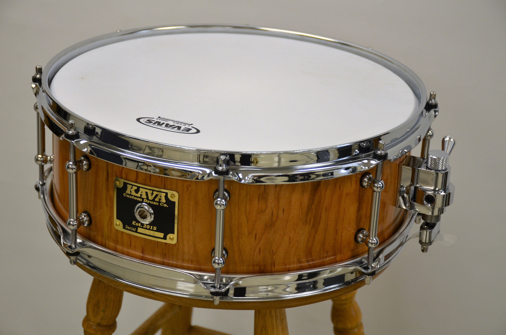

006: 5" x 14" x 3/8" Figured Cherry, Trick Strainer, 8 Tube Lugs
This piece of figured cherry was located by one of our guys at an exotic wood shop in Burlington, Ontario. The shell has a beautiful character that the pics can't do all that much justice for. This one was a great sounding drum as soon as the heads were put on and the tuning roughed in.